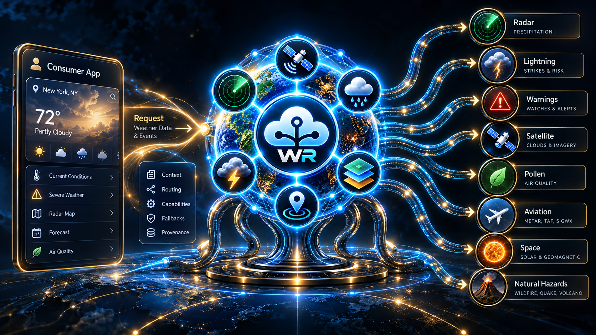

01 · Bedarf
Fachlich anfragen
Ein Consumer beschreibt, was er benötigt — etwa flächigen Niederschlag — statt einen bestimmten Anbieter vorzuschreiben.
WeatherRouter verbindet Anwendungen mit den passenden Wetter- und Gefahreninformationen. Je nach Bedarf, Ort und Situation wählt WeatherRouter geeignete Quellen aus und liefert die benötigten Daten nachvollziehbar zurück.

WeatherRouter bewertet verfügbare Quellen, berücksichtigt Kontext und Einschränkungen und liefert die passende Ressource samt Provenienz.
Ein Consumer beschreibt, was er benötigt — etwa flächigen Niederschlag — statt einen bestimmten Anbieter vorzuschreiben.
WeatherRouter prüft geeignete Kandidaten anhand normalisierter Eigenschaften und harter Ausschlussregeln.
Der Consumer erhält die nutzbare Resource und kann nachvollziehen, welche Quelle tatsächlich verwendet wurde.
Breite Routing-Intents ermöglichen automatische Fallback-Ketten. Spezialisierte Capabilities bleiben bestehen, wenn ein Consumer bewusst eine konkrete Messgröße oder Darstellungsart benötigt.
Provider-IDs sind kein Qualitätswert. Ein Profil schränkt ein, definiert aber keine Provider-Priorität.
Radarreflektivität, Niederschlagsrate, Satellitenschätzung und Modellakkumulation können denselben visuellen Bedarf bedienen, sind physikalisch aber nicht dasselbe. WeatherRouter hält Herkunft, Messmethode, Zeitsemantik, Größe und Einheit deshalb sichtbar.
Eine erreichbare technische Quelle bedeutet nicht automatisch fachliche Abdeckung für den angefragten Ort.
Messmethode, Beobachtungsart, physikalische Größe und Einheit bleiben Teil der Routingentscheidung.
Diagnose und Provenienz sollen erklären, warum ein Kandidat verworfen und ein anderer ausgewählt wurde.
Das öffentliche Repository ist ein unabhängig versionierter Validierungs- und Dokumentationsspiegel. Es ist weder die private Entwicklungsquelle noch automatisch ein installierbares Home-Assistant-Paket.